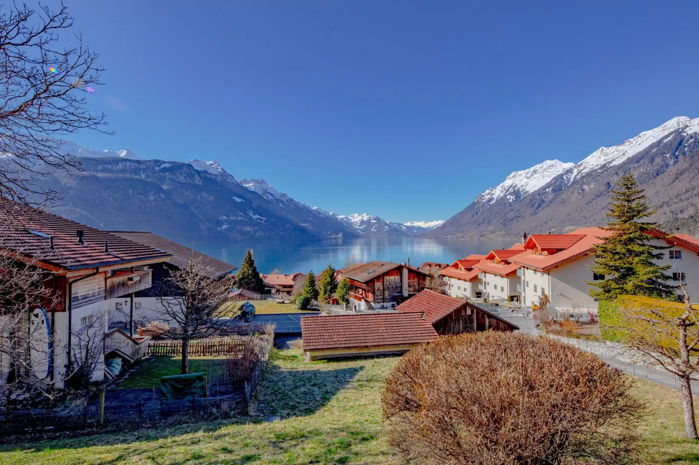

Ferien in Brienz, persönlich betreut
Ankommen.
Aufatmen. Zuhause sein.
Ausgewählte Ferienwohnungen zwischen türkisblauem See und Berner Alpen – mit Gastgebern, die vor Ort für Sie da sind.
Ihre Auszeit beginnt hier
Das Beste von Brienz.
Mit persönlicher Note.
Ob Chalet im historischen Dorfkern, grosszügige Villa oder Rückzugsort direkt am See: Bei uns finden Sie Räume, die sich nach Ferien anfühlen.
Jede Unterkunft wird von unserem lokalen Team persönlich betreut – für entspannte Anreise, ehrliche Tipps und schnelle Hilfe, wenn sie gebraucht wird.
Unsere Unterkünfte
Ihr Platz am See

LOKAL· SEIT 2018 ·
FÜR SIE DA
Für Eigentümer
Ihre Immobilie.
Unsere ganze Sorgfalt.
Wir übernehmen die komplette Vermietung Ihrer Ferienwohnung oder die Suche nach passenden Dauermietern – transparent, persönlich und mit einem eingespielten Team vor Ort.
Warum mit uns
„Sie geniessen Ihre Immobilie.
Wir kümmern uns um den Rest.“
unsere Gäste
direkt in Brienz
ohne versteckte Kosten
Lernen wir uns kennen
Was dürfen wir
für Sie tun?
Ob Feriengast oder Eigentümer – schreiben Sie uns. Wir melden uns persönlich und zeitnah.